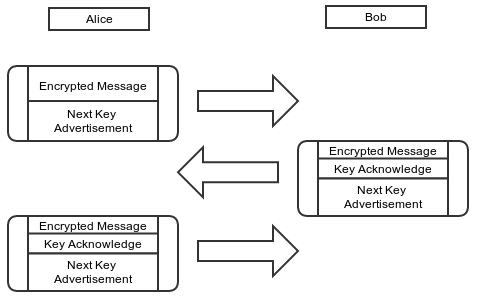
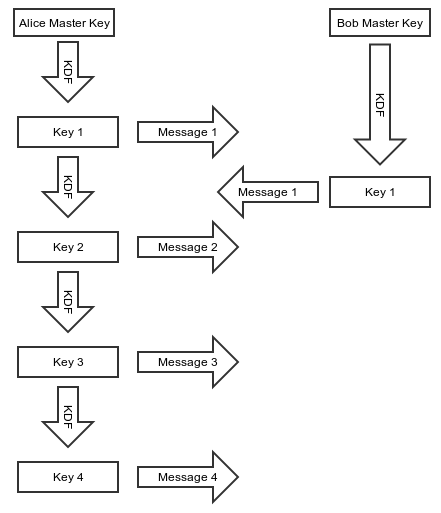
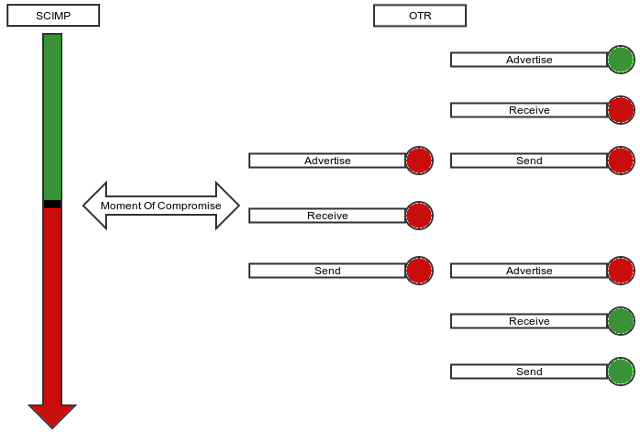
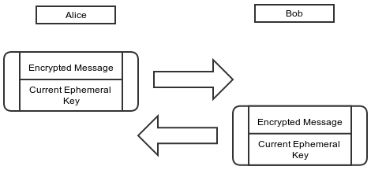

At Open Whisper Systems, we’ve been working on improving our encrypted asynchronous chat protocol for TextSecure. The TextSecure protocol was originally a derivative of OTR, with minor changes to accommodate it for transports with constraints like SMS or Push. Some of the recent changes we’ve made include simplifying and improving OTR’s deniability, as well as creating a key exchange mechanism for asynchronous transports. Our most recent change incorporates what we believe to be substantial improvements to OTR’s forward secrecy “ratchet.”
The OTR Ratchet
As we’ve discussed previously, “forward secrecy” is one of the critical security properties OTR is designed to provide. In contrast to the PGP protocol model, where messages to a recipient are encrypted with the same public key over and over again, OTR uses ephemeral key exchanges for each session. This is a critical feature of any modern secure protocol, because otherwise a network adversary who records (potentially years of) ciphertext traffic can later decrypt all of it if they manage to later compromise the one key that was used. By contrast, with ephemeral key exchanges, there is no key to compromise in the future (since the keys are only ephemerally in memory for a short time), so any recorded ciphertext should remain private.
Simply doing an ephemeral key exchange at the beginning of a session is enough to provide this property, but OTR takes things a step further by continuously ratcheting the key material forward during the course of a session. The OTR ratchet is what we call a “three step ratchet.”
- Alice sends an encrypted message to Bob. Along with the actual message content, Alice “advertises” a new Diffie-Hellman key that she will use in the future.
- Bob sends an encrypted message to Alice. Along with the actual message content, Bob “acknowledges” the key that Alice advertised, and also advertises his own next key.
- Alice will use the advertised and acknowledged key the next time she sends a message.

Note that, until Bob has acknowledged Alice’s next key, she can’t use it. If Alice needs to send multiple messages to Bob before he replies, Alice will need to keep using her current key and advertising the same next key.
TextSecure and Forward Secrecy
Given that OTR was originally positioned for instant messaging apps, it’s not clear why individual message-level forward secrecy is necessary. Instant messaging sessions tend to be ephemeral, and the messages themselves tend to be in memory for the duration of the session, so it’s not entirely obvious what immediate value a ratcheting forward secrecy protocol provides in that context. Simply doing an ephemeral Diffie-Hellman key exchange at the beginning of every session would probably be enough.
As an asynchronous messaging app, however, TextSecure benefits greatly from such a ratcheting forward secrecy mechanism. Asynchronous chat sessions tend to be extremely long-lived (perhaps even years long), in contrast to IM sessions which are constantly being setup and torn down. In the context of long-lived sessions, however, the OTR ratcheting protocol leaves something to be desired. Given the nature of a “three step” ratchet, if a sender transmits something to a receiver, and the receiver doesn’t respond for a few days, the sender has to keep the key material used to encrypt that message around for days.
There are other simple problems as well. OTR was designed for transports which guarantee in-order delivery, which most asynchronous messaging transports don’t provide. There is a counter which prevents replay attacks, but it’s complex to adapt to an unreliable transport, and there is also a possibility that old messages can arrive after key material has been rolled forward.
The SCIMP Ratchet
Silent Circle uses a synchronous protocol of their own devising (called SCIMP) that employs a different style of ratchet.
Each message key is derived as an iterative hash of the last message key used.
- As soon as Alice sends a message to Bob, she hashes her encryption key to get her next encryption key.
- Alice immediately destroys her encryption key and replaces it with her next encryption key.

It’s clear that an asynchronous messaging app like TextSecure could benefit from an immediate ratchet. Even with long running sessions, there would never be any outstanding key material available for compromise. However, a protocol like SCIMP has some drawbacks as well:
The first question is what a client should do when a message is lost. If a client is expecting a message with sequence number
5but instead receives a message with sequence number6(common for asynchronous transports), what should the client do? It’s possible to derive the key material for sequence number5and then immediately derive the key material for sequence number6to decrypt the message, but the client would need to hang on to the key material for sequence number5until the message arrives.That key material is sensitive, however, because it can be used to calculate the key material for every subsequent sequence number. So a client can’t hang on to it forever, and using time-based or window-based approaches for how long a client should retain it are always going to be hard to tune and inevitably tuned incorrectly for some percentage of cases.
The OTR style ratchet has the nice property of being “self healing.” If, for whatever reason, any individual ephemeral key is compromised or otherwise found to be weak at any time, the ratchet will heal itself. We call this “future secrecy.” In the SCIMP hash iteration case, however, any individual ephemeral key compromise or problem will extend through the entire session.
The Window Of Compromise
A ratcheting protocol is largely about reducing the impacts of a key compromise. A hash ratchet protocol like SCIMP has excellent forward secrecy properties but poor future secrecy properties, while a DH ratchet protocol like OTR has less than perfect forward secrecy properties but nice future secrecy properties:

The TextSecure Ratchet
We wanted a ratchet that combines the best of both worlds: the optimal forward secrecy that a hash iteration ratchet like SCIMP provides, as well as the nice future secrecy properties that a DH ratchet like OTR provides, with as little of the negatives of both as possible. The inimitable Trevor Perrin did most of the heavy lifting for the primary innovations in combining the two.
First, remember that the OTR message format looks roughly like this:
struct {
opaque sender_key_id[4];
opaque receiver_key_id[4];
opaque next_key_id[4];
opaque next_key[32];
opaque ciphertext[...];
opaque mac[10];
} OTR_Message;
All these key IDs are necessary because OTR is based on a mechanism of “advertising” keys and receiving confirmations for those keys in subsequent messages. By advertising a key under a MAC from the previous key, the integrity of advertised keys can be traced all the way back to the original shared key, ensuring that no MITM attack is possible on any of the subsequently advertised keys. However, that is the source of our “three step” DH ratchet problem, and also makes for a fair amount of book keeping.
We wanted to incorporate a DH ratchet into our ratcheting protocol because of the “future” secrecy it provides. However, it would be nice if we could eliminate the “advertise” step in the OTR ratchet and bring it down to a “two step” ratchet. In order to achieve a “two step” ratchet, we derive a RootKey in our initial handshake KDF, and both mix it into and re-derive it from every subsequent DH KDF. This makes it possible to chain the key material together so that Alice can create and use a new DH ephemeral key immediately without first advertising it and waiting for acknowledgment. Because the RootKey is mixed into the KDF, trust in new ephemerals can still be chained back to the initial handshake.
This transforms the “three step” DH ratchet into a “two step” DH ratchet:
- Alice generates a new ECDH ephemeral key
A1and uses it immediately to send a message. - Alice receives a message with Bob’s new ECDH ephemeral
B1and can then destroyA1and generateA2when sending her next message.

This is a best possible case DH ratchet, and it also greatly simplifies the message format, which is now simply:
struct {
opaque sender_ephemeral[32];
opaque body[...]
opaque mac[10]
}
It also eliminates all the key ID book keeping.
To get the immediate forward secrecy of a SCIMP-like protocol, we can now mix in that style of hash iteration ratchet for the space between DH round trip clicks. Essentially, for each message sent within the context of a single DH ratchet click, there is a sub-ratchet in the hash iteration ratchet style.
From Alice’s perspective, the final picture looks like this:
Alice
Sending | Receiving
MK CK RK CK MK
-- -- -- -- --
ECDH(A0,B0)
|
|
ECDH(A1,B0) +
/|
/ |
/ + ECDH(A1,B1)
CK-A1-B0 |\
| | \
MK-0 ----+ | \
| | CK-A1-B1
MK-1 ----+ | |
| | +---- MK-0
MK-2 ----+ | |
| +---- MK-1
ECDH(A2,B1) +
/|
/ |
/ |
CK-A2-B1 |
| + ECDH(A2,B2)
MK-0 ----+ \
\
\
CK-A2-B2
|
+---- MK-0
|
+---- MK-1
- Each DH ratchet is combined with the existing root key (
RK) to derive a newRKas well as a “chain key” for that DH pair. - Each “chain key” is hash iterated for each message sent/received under that chain.
- Rather than hash iterating the cipher keys used to encrypt a message directly (SCIMP style), there is a layer of indirection where message keys are derived from the chain keys. This solves SCIMP’s “delayed message problem,” because in the case of a delayed message its keys can be immediately derived and cached without holding back the chain key from ratcheting forward. Those cached message keys can not be used to derive any subsequent message keys, maintaining forward secrecy.
The final message format is simply:
struct {
opaque sender_ephemeral_key[32];
opaque counter[3];
opaque mac[10];
}
The result is a ratcheting protocol that combines the best of a DH ratchet’s “future secrecy” properties with the optimal “forward secrecy” properties from a hash ratchet. It also simplifies the wire format and eliminates all the key ID book keeping. Nice properties like cryptographically enforced message ordering and replay protection all come for free, without any complex record keeping required. The code is simpler, and the protocol security is more robust.
We think this represents an improved cryptographic protocol for asynchronous messaging systems like TextSecure. Another asynchronous messaging system, Pond, has also incorporated it.
This is obviously a simplified protocol description, but the full specification can be found here if you’d like to look at it critically or in more detail.
– Moxie Marlinspike, 26 November 2013